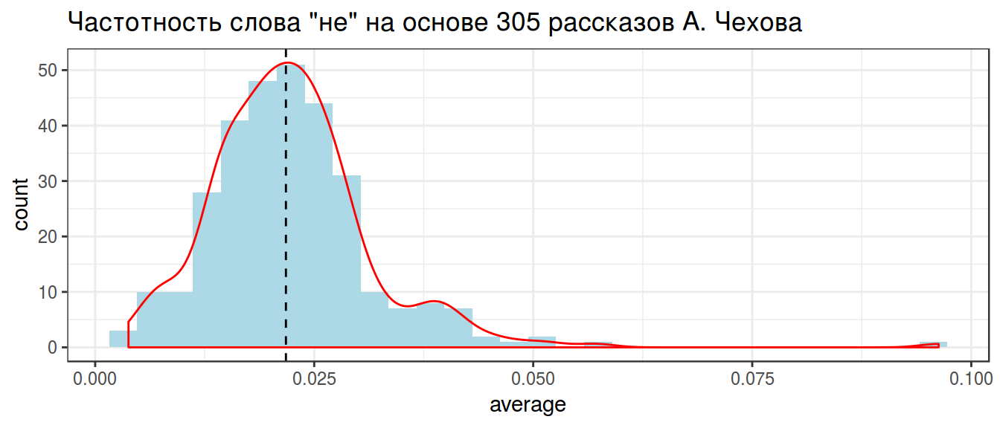
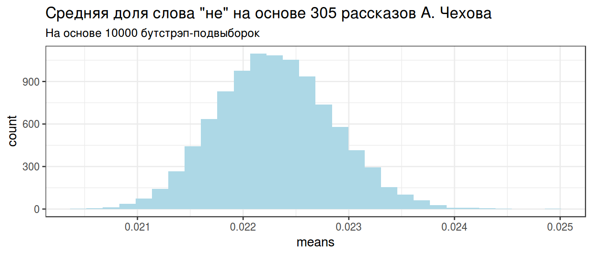
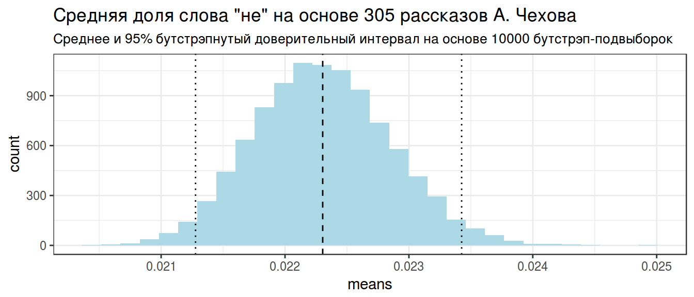
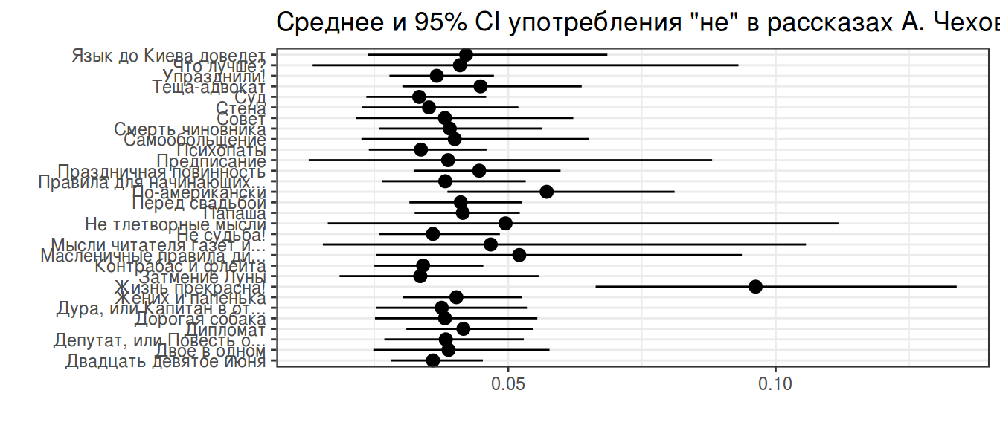
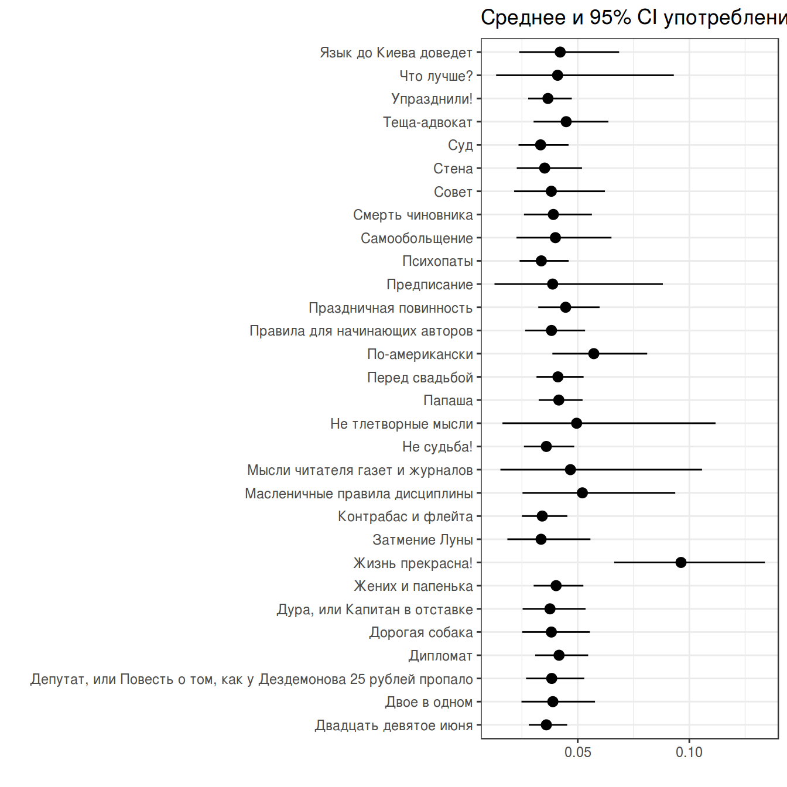
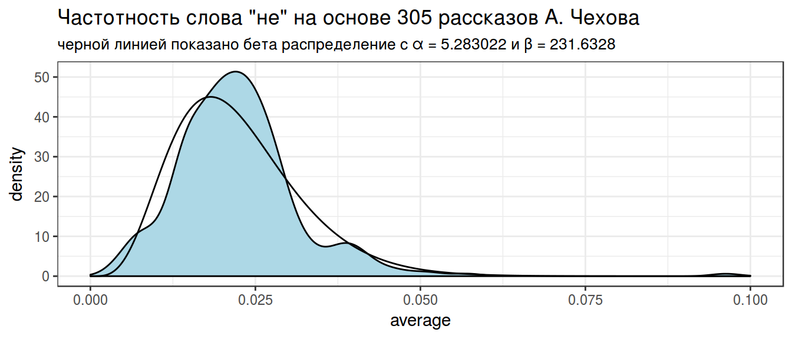
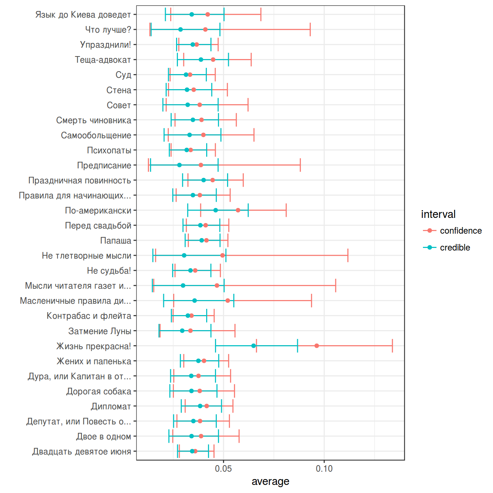

- Биномиальные доверительные интервалы
Г. Мороз
1. Введение
- ваши данные состоят их множества биномиальных исходов
- правильные vs. неправильные ответы у группы людей
- диалектные vs. недеалектные формы у информантов
- употребление предлога в vs. остальные слова в группе текстов
- …
- Какая доля в среднем?
- Какая доля у каждой единицы наблюдения?
- доля правильных ответов у каждого человека
- доля диалектных форм у каждого информанта
- доля употреблений предлога в в каждом тексте
- How much uncertainty is present in our point estimate?
1.1 Библиотеки
library(tidyverse)
library(bootstrap)
library(mosaic)1.2 Рассказы А. Чехова
chekhov <- read_tsv("https://goo.gl/o18uj7")
chekhov %>%
mutate(trunc_titles = str_trunc(titles, 25, side = "right")) ->
chekhov
head(chekhov)- 311 рассказов А. Чехова
- число слов в каждом рассказе
- 46610 уникальных слов в каждом рассказе
2. Averaging
chekhov %>%
mutate(average = n/n_words) %>%
arrange(desc(average)) ->
chekhov
chekhov %>%
select(trunc_titles, word, average)Давайте посмотрим только на частицу не:
chekhov %>%
filter(word == "не") %>%
select(trunc_titles, word, average) %>%
ggplot(aes(average)) +
geom_histogram(fill = "lightblue")+
geom_density(color = "red")+
theme_bw()+
labs(title = 'Частотность слова "не" на основе 305 рассказов А. Чехова')2.1 Grand mean
chekhov %>%
filter(word == "не") %>%
summarise(g_mean = mean(average)) ->
grand_mean
grand_meanchekhov %>%
filter(word == "не") %>%
select(trunc_titles, word, average) %>%
ggplot(aes(average)) +
geom_histogram(fill = "lightblue")+
geom_density(color = "red")+
theme_bw()+
labs(title = 'Частотность слова "не" на основе 305 рассказов А. Чехова')+
geom_vline(xintercept = unlist(grand_mean), lty = 2)2.2 Trimmed mean
chekhov %>%
filter(word == "не") %>%
summarise(t_mean = mean(average, trim = 0.05)) ->
trimmed_mean
trimmed_meanchekhov %>%
filter(word == "не") %>%
select(trunc_titles, word, average) %>%
ggplot(aes(average)) +
geom_histogram(fill = "lightblue")+
geom_density(color = "red")+
theme_bw()+
labs(title = 'Частотность слова "не" на основе 305 рассказов А. Чехова')+
geom_vline(xintercept = unlist(trimmed_mean), lty = 2)
2.3 Weighted mean
chekhov %>%
filter(word == "не") %>%
summarise(w_mean = weighted.mean(average, n_words)) ->
weighted_mean
weighted_meanchekhov %>%
filter(word == "не") %>%
select(trunc_titles, word, average) %>%
ggplot(aes(average)) +
geom_histogram(fill = "lightblue")+
geom_density(color = "red")+
theme_bw()+
labs(title = 'Частотность слова "не" на основе 305 рассказов А. Чехова')+
geom_vline(xintercept = unlist(weighted_mean), lty = 2)3. Хакерский метод: бутстрэп
Из наших данных возьмем 10000 выборок с повторением.
set.seed(42)
chekhov %>%
filter(word == "не") ->
chekhov_bs
chekhov_bs <- bootstrap(chekhov_bs$average, nboot = 10000, theta = mean)$thetastar
# ggplot работает только с датафреймами
chekhov_bs <- data_frame(means = chekhov_bs)
chekhov_bs %>%
ggplot(aes(means)) +
geom_histogram(fill = "lightblue")+
theme_bw()+
labs(title = 'Средняя доля слова "не" на основе 305 рассказов А. Чехова', subtitle = "На основе 10000 бутстрэп-подвыборок")
chekhov_bs %>%
summarise(mean = mean(means),
q1 = quantile(means, 0.025),
q2 = quantile(means, 0.975))->
chekhov_stats
chekhov_statschekhov_bs %>%
ggplot(aes(means)) +
geom_histogram(fill = "lightblue")+
theme_bw()+
labs(title = 'Средняя доля слова "не" на основе 305 рассказов А. Чехова', subtitle = "Среднее и 95% бутстрэпнутый доверительный интервал на основе 10000 бутстрэп-подвыборок")+
geom_vline(xintercept = unlist(chekhov_stats), lty = c(2, 3, 3))
4. Фриквентисткий метод: доверительный интервал
Основная соль фриквинтистского доверительного интервала (по-английски confidence interval) основано на правиле трех сигм нормального распределения:

z-score:
- 95% данных находится в 1.96 стандартных отклонений
- 99% данных находится в 2.58 стандартных отклонений
Доверительный интервал:
- предположим что данные генеральной совокупности нормально распределены
- тогда доверительные интервалы выборок взятых из генеральной совокупности будут покрывать среднее генеральной совокупности
\[\bar{x} \pm z \times \frac{\sigma}{\sqrt{n}}\text{, где } z = 1 - \frac{\alpha}{2}\]
Распространение этой логики на биномиальные данные называется интервал Вальда:
\[\bar{x} = \theta; \sigma = \sqrt{\frac{\theta\times(1-\theta)}{n}}\]
Тогда интервал Вальда:
\[\theta \pm z\times\sqrt{\frac{\theta\times(1-\theta)} {n}}\]
Есть только одна проблема: работает он плохо. Его аналоги перечислены в других работ:
- assymptotic method with continuity correction
- Wilson score
- Wilson Score method with continuity correction
- Jeffreys interval
- Clopper–Pearson interval (default in R
binom.test()) - Agresti–Coull interval
- … см. пакет
binom
chekhov %>%
filter(word == "не") %>%
slice(1:30) %>%
group_by(titles) %>%
mutate(low_ci = binom.test(x = n, n = n_words, ci.method = "Clopper-Pearson")$conf.int[1],
up_ci = binom.test(x = n, n = n_words, ci.method = "Clopper-Pearson")$conf.int[2]) %>%
ggplot(aes(trunc_titles, average))+
geom_point()+
geom_pointrange(aes(ymin = low_ci, ymax = up_ci))+
theme_bw()+
coord_flip()+
labs(title = 'Среднее и 95% CI употребления "не" в рассказах А. Чехова',
x = "", y = "")
5. Empirical Bayes estimation
Метод Empirical Bayes estimation – один из байесовских методов, в рамках которого нужно:
- произвести оценку априорного распределения вероятностей на основании имеющихся данных
- использовать полученное априорное распределение для получение апостериорной оценки для каждого наблюдения
Наши данные:
chekhov %>%
filter(word == "не") %>%
select(trunc_titles, word, average) %>%
ggplot(aes(average)) +
geom_histogram(fill = "lightblue")+
geom_density(color = "red")+
theme_bw()+
labs(title = 'Частотность слова "не" на основе 305 рассказов А. Чехова')В данном случае, данные можно подогнать под бета распределение \(Χ \sim Beta(α_0, β_0)\) (это далеко не всегда так). Подгонку можно осуществлять множеством разных функций, но я воспользуюсь следующей системой уравнений:
\[\mu = \frac{\alpha}{\alpha+\beta}\] \[\sigma = \frac{\alpha\times\beta}{(\alpha+\beta)^2\times(\alpha+\beta+1)}\]
Из этой системы можно выразить \(\alpha\) и \(\beta\):
\[\alpha = \left(\frac{1-\mu}{\sigma^2} - \frac{1}{\mu}\right)\times \mu^2\] \[\beta = \alpha\times\left(\frac{1}{\mu} - 1\right)\]
mu <- mean(chekhov$average[chekhov$word == "не"])
var <- var(chekhov$average[chekhov$word == "не"])
alpha0 <- ((1 - mu) / var - 1 / mu) * mu ^ 2
beta0 <- alpha0 * (1 / mu - 1)
alpha0## [1] 5.283022beta0## [1] 231.6328Посмотрим, насколько хорошо, получившееся распределение подходит к нашим данным:
x <- seq(0, 0.1, length = 1000)
estimation <- data_frame(
x = x,
density = c(dbeta(x, shape1 = alpha0, shape2 = beta0)))
chekhov %>%
filter(word == "не") %>%
select(trunc_titles, word, average) %>%
ggplot(aes(average)) +
geom_histogram(fill = "lightblue")+
geom_line(data = estimation, aes(x, density))+
theme_bw()+
labs(title = 'Частотность слова "не" на основе 305 рассказов А. Чехова',
subtitle = "черной линией показано бета распределение с α = 5.283022 и β = 231.6328")
Полученное распределение можно использовать как априорное распределение. Этот трюк и называется Empirical Bayes estimation.
6. Байесовский доверительный интервал
Байесовский доверительный \(k\)-% интервал (по-английски credible interval) — это интервал \([\frac{k}{2}, 1-\frac{k}{2}]\) от апостериорного распределения. Давайте используем распределение, полученное в предыдущем разделе в качестве априорного для трдцети рассказов Чехова:
chekhov %>%
filter(word == "не") %>%
slice(1:30) %>%
group_by(titles) %>%
mutate(alpha_post = n+alpha0,
beta_post = n_words-n+beta0,
average_post = alpha_post/(alpha_post+beta_post),
cred_int_l = qbeta(.025, alpha_post, beta_post),
cred_int_h = qbeta(.975, alpha_post, beta_post)) ->
posterior
posterior %>%
select(titles, n_words, average, average_post) %>%
arrange(n_words)posterior %>%
ggplot(aes(titles, average_post, ymin = cred_int_l, ymax = cred_int_h))+
geom_pointrange()+
coord_flip()
